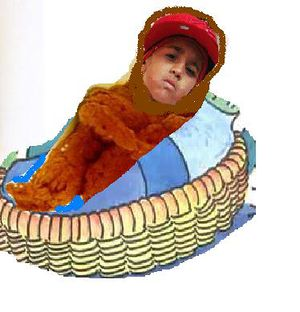

Miguelito
 De: La Frikipedia, la enciclopedia extremadamente seria.
De: La Frikipedia, la enciclopedia extremadamente seria.
De la serie grandes personajes:
Mojon cabezon recien cagado.
| Nacimiento
|
El dia en que los latinos perdimos la dignidad ante el mundo gracias al penedector.
|
| Muerte
|
Caundo recuperemos la dignidad (en la Hoguera).
|
| Ocupación
|
...
|
| Nacionalidad
|
Cd. Recto, El Ano Perto rico.
|
| Malo o bueno
|
Malo( quemara nuestras cosechas, violara nuestros hijos y echara sal en los campos de cultivo)
|
| Atentados contra la humanidad
|
"Vivir"
|
| Religión
|
Escatologia
|
| Notas
|
Se rumorea que es el anticristo lo cual no comparto ya que me parece solo un mojon cabezon.
|
 Miguelito el dia que es abandonado por sus padres orangutanes
(Austrlopitecus mojoncitus). Su alumbramiento ocurre cuando es cagado al mundo por su orangutana madre. es adoptado por una hueste de indigentes a los que llama familia, sus letras están inspiradas en las comunes escenas sexuales que sus padres realizan en la plaza principal de ciudad Recto (su ciudad natal) para ganar dinero.
- Para ganar dinero solía prostiuirse y con esto ayudar a la compra de un
inodoro cama para que así, el y sus 17 hermanos duerman mas cómodos.
- A sus 5 años su padre adoptivo es arrestado por posesión y venta de cocaína y muere al ser violado en prisión por el negro líder de la prisión.
- Su madre, la prostituta del pueblo, (De quien aprendió Miguelito su oficio) muere de Candidiasis (Asfixiada por su mal olor) cuando miguelito tenia seis años.
- Pasando entonces por todas estas tragedias a sus 6 años miguelito empieza a inhalar pegamento de zapatos y heroina.
- Un dia,
Haciendo ruido cantando regeton, Un mono con joyas Productor de reggeton, descubre Lo que segun dijo "La`ñelda el coñito tiene talento!!!" y lo lanzo al estrellato. (es incorrecto afirmar que alguien puede tener talento para hacer este ruido, cualquiera y digo cualquiera, hasta un individuo con sindrome de Down, puede hacer ese ruido conocido como el reggeton).
Descripción
Autor(es):
- Nexo
- Azulejos
- Juventudtirapiedra
- Veni Vidi Vici
- E1324
- Leónidas
Frikipedia 2005-2016, Licencia
GFDL 1.2 - Extraído por FrikiLeaks